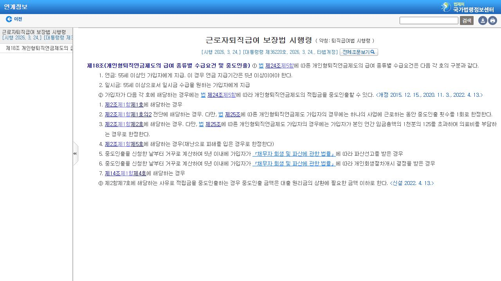
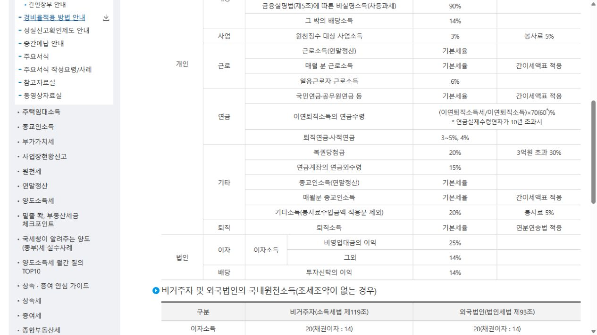
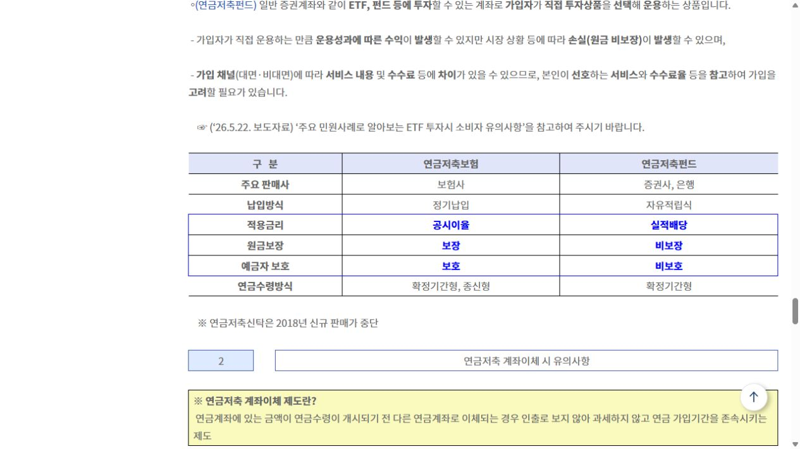
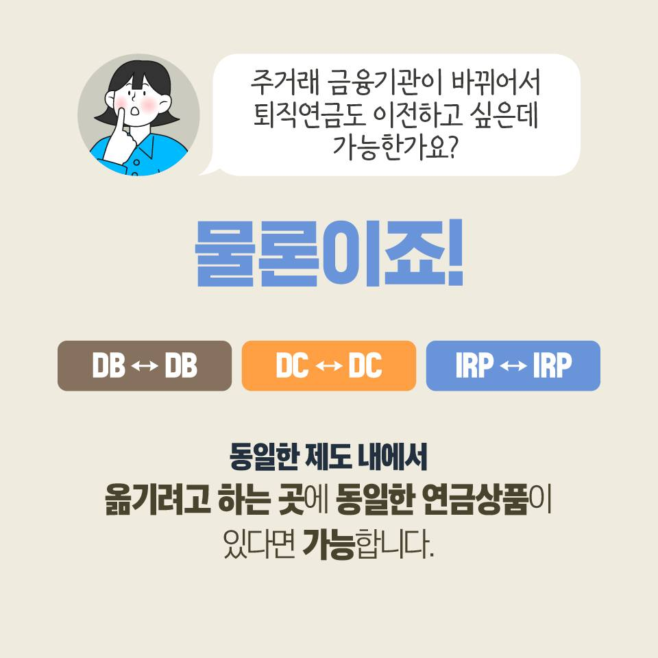
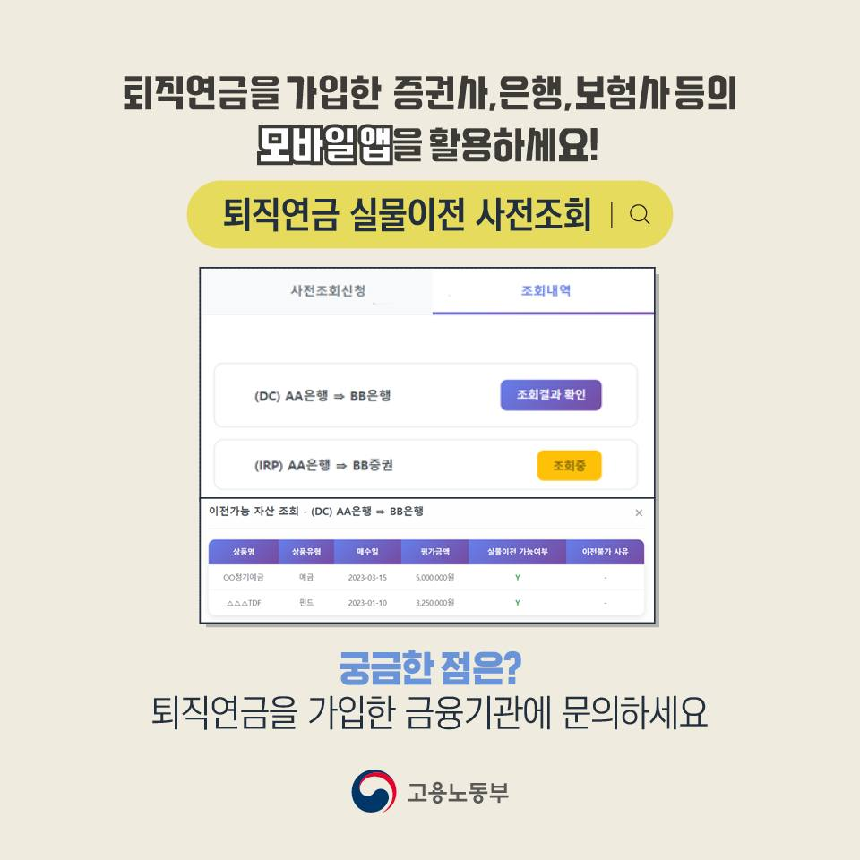
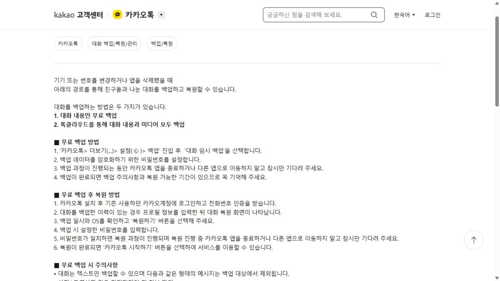
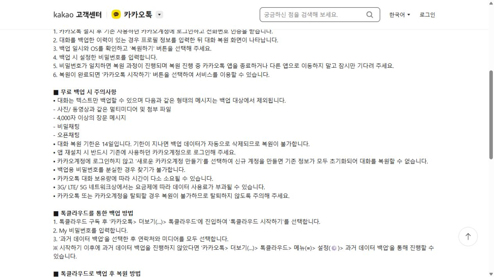

연금저축 600만 원, 매달 얼마씩 납입해야 할까?
연 600만 원은 목표액이 아니라 세액공제 대상 상한선입니다. 시작 월에 따라 월 납입액을 다시 계산하고, 중도해지하지 않을 수준으로 정하는 글입니다.

국세청 표에서 연금저축 600만 원·퇴직연금 포함 900만 원 한도를 직접 확인
✓ 원고·공식 근거·실제 화면·서식 검수 완료
40대 이후 돈·생활 문제를 공식 화면으로 설명하는 검색형 묶음
연 600만 원은 목표액이 아니라 세액공제 대상 상한선입니다. 시작 월에 따라 월 납입액을 다시 계산하고, 중도해지하지 않을 수준으로 정하는 글입니다.
국세청 표에서 연금저축 600만 원·퇴직연금 포함 900만 원 한도를 직접 확인
✓ 원고·공식 근거·실제 화면·서식 검수 완료
계산상 공제액이 그대로 현금 환급되는 것은 아닙니다. 국세 15%·12%와 지방소득세 포함 16.5%·13.2%를 구분하고, 결정세액과 기납부세액까지 함께 봐야 하는 이유를 설명합니다.
국세청 15%·12% 표와 금융위원회 16.5%·13.2% 안내를 교차 확인
✓ 공제율 표기 혼동과 과장된 환급 보장 표현 수정 완료
개인형 IRP는 시행령 제18조의 사유에 해당해야 중도인출을 검토할 수 있습니다. 금융회사에 물어볼 증빙·가능 금액·예상세액을 순서대로 정리했습니다.

DC형 제14조가 아닌 개인형 IRP 전용 제18조로 근거 교체
✓ 현행 법령 대조 및 근거 오류 수정 완료
평가금액과 실제 입금액이 달라지는 이유를 세액공제 받은 납입금·받지 않은 납입금·운용수익으로 나눠 설명합니다.

국세청 표의 ‘연금계좌의 연금외수령’ 해당 행을 읽기 좋은 크기로 확보
✓ 국세 15%와 지방소득세 관계를 오해 없게 보완
| 확인축 | 펀드 | 보험 |
|---|---|---|
| 납입 | 자유적립식 | 정기납입 |
| 적용 방식 | 실적배당 | 공시이율 |
| 원금 | 비보장 | 보장 |

✓ 2026년 금융위원회 공식 비교표로 전면 교체
이전과 해지는 다릅니다. 동일 제도·동일 상품 조건과 실물이전 사전조회 방법을 공식 카드뉴스로 설명합니다.

IRP는 IRP끼리, 수관 금융회사에도 같은 상품이 있어야 실물이전 가능

✓ 고용노동부 공식 카드뉴스 2장으로 전면 교체
백업 메뉴만 알려주는 글이 아니라 14일 복원 기한·같은 계정·전화번호 인증·무료 백업 제외 항목을 실제 고객센터 화면으로 보여줍니다.

카카오 고객센터의 백업 메뉴와 복원 조건

사진·동영상·첨부파일 등 무료 백업 제외 항목과 주의사항
✓ 실제 공식 화면 2장과 복원 실패 점검 순서 적용
최종 검수: 이미지 경로, 공식 링크, 형광펜, 밑줄, 이모티콘, 금지 문구(그림 설명·영상 퍼센트·확인 기준일) 점검 완료